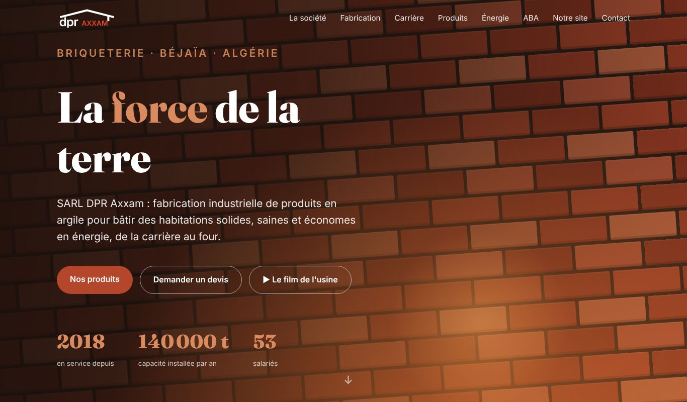
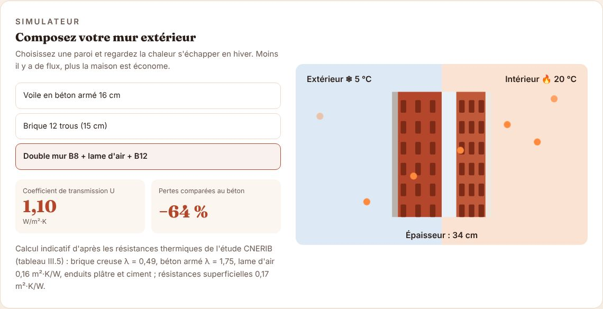
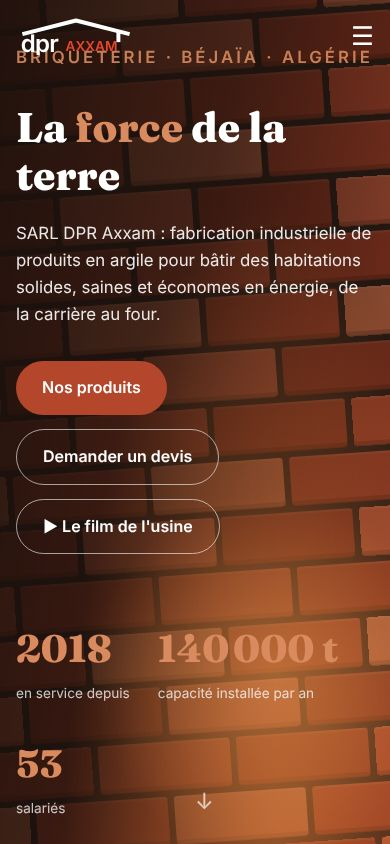
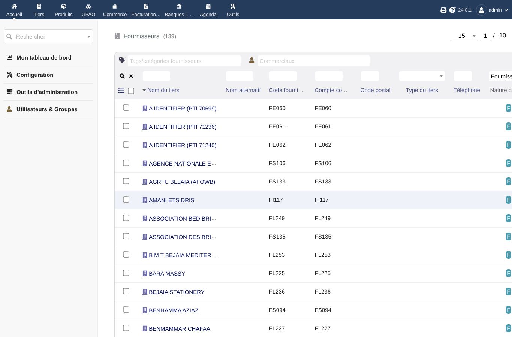
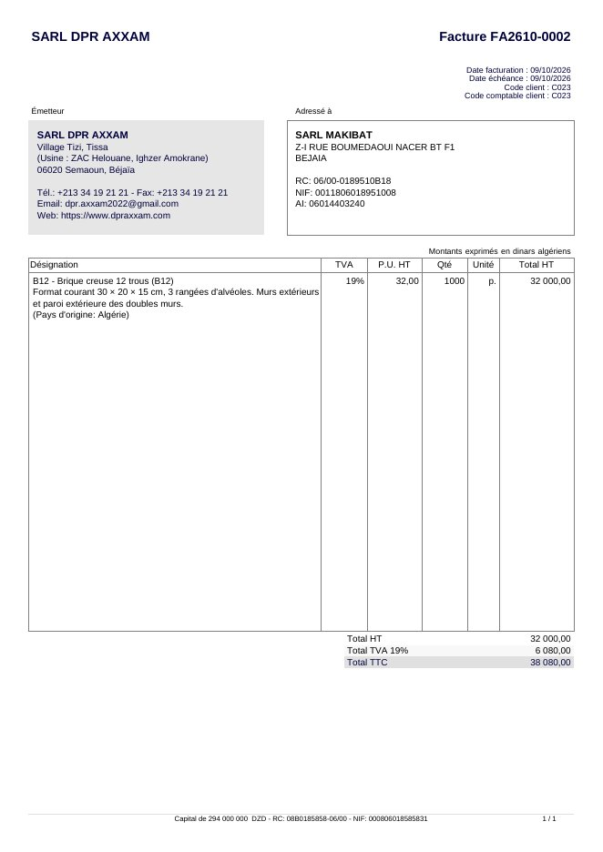
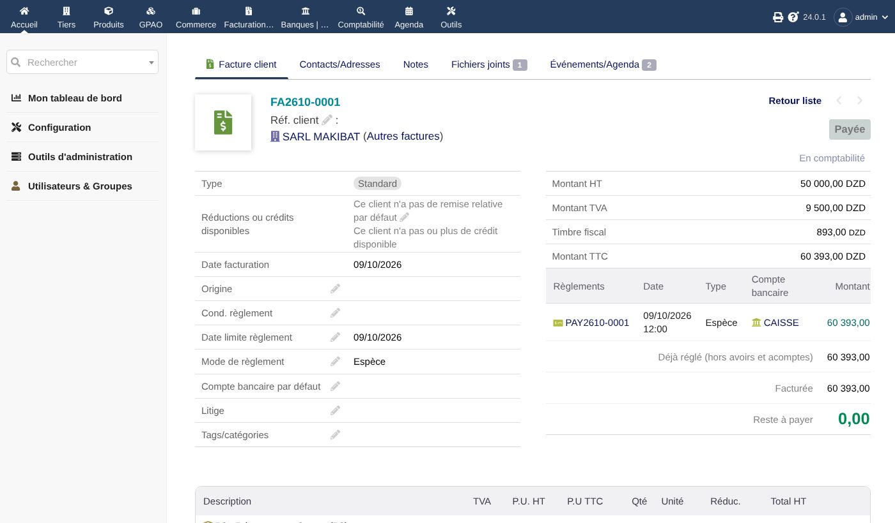
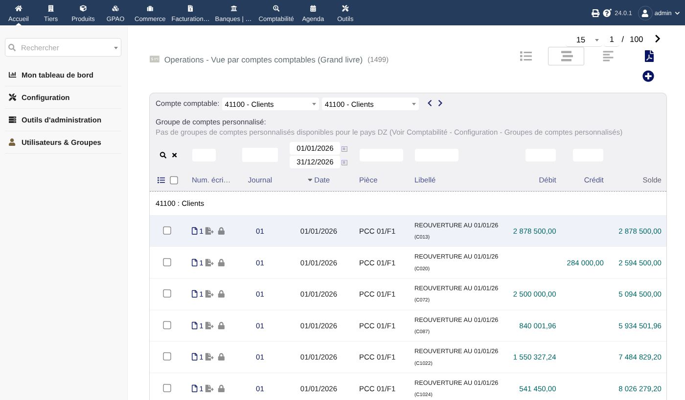
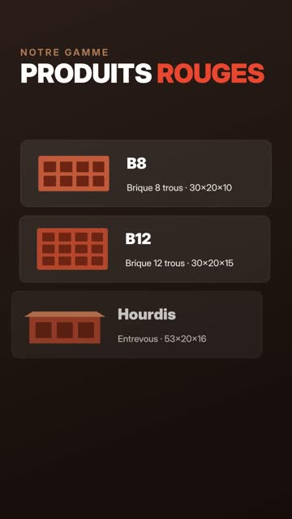
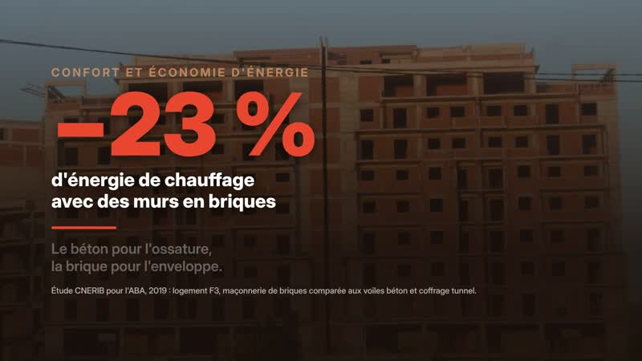

| 1 | DPR-AXXAM_site-web.zip — le site Internet complet, prêt à déposer chez un hébergeur (page unique, photos, vidéo, visuels ABA). |
| 2 | DPR-AXXAM_ERP-Dolibarr.zip — le logiciel de gestion paramétré pour la briqueterie : ventes, achats, stocks, caisse, fabrication, avec les 421 clients et fournisseurs, et la comptabilité 2026 de PC Compta (plan, journaux, 8 748 écritures), le droit de timbre automatique et l'export vers PC Compta. |
| 3 | DPR-AXXAM_videos-publicitaires.zip — deux vidéos de 24 secondes : verticale (Reels, TikTok, WhatsApp) et horizontale (YouTube, Facebook). |
| 4 | DPR-AXXAM_Guide.pdf — ce document. |
| Élément | Test | Résultat |
|---|---|---|
| Site | Téléphone (360 px), tablette, portable, grand écran : affichage, erreurs, fichiers manquants, débordement | Aucune erreur |
| Site | Simulateur de mur, courbes du séchoir, four tunnel animé, phases de la carrière, filtres et visionneuse ABA, film de l'usine, carte | Fonctionnels |
| ERP | Installation complète à partir de zéro, paramétrage automatique, import des tiers | 421 tiers, 0 erreur |
| ERP | Facture client (FA2610-…), PDF, facture fournisseur, TVA 19 % | Conformes |
| ERP | Sauvegarde puis restauration de la base | Données retrouvées |
| Compta | Import des 8 748 lignes de PC Compta, balance comparée compte par compte | Identique |
| Compta | Timbre calculé comparé aux 471 factures en espèces de 2026 | 471 / 471 exacts |
| Compta | Facture → règlement caisse → journaux 073 et 03 → export PC Compta | Écritures conformes |
| Compta | Générateur .xls : réécriture de vos fichiers PC Compta (import janvier, export d'origine) | Identiques à l'octet |
| Compta | Rechargement d'un export PC Compta : pas de doublon ; fichier d'une autre société refusé | Conforme |
| Compta | Tableau de bord : chiffre d'affaires, créances, trésorerie, timbre, TVA, 1er client comparés à un calcul indépendant | Identiques |
| Compta | Dossier comptable : balance générale (148 comptes), balance des tiers (499 lignes), G50 sur 10 mois recalculées indépendamment ; actif = passif ; résultat TCR = classe 7 − classe 6 | 0 écart |
| ERP | Montant en lettres sur facture et devis (60 393 DA ; 57 120 000 DA) | Texte exact |
| Vidéos | Encodage H.264 1080×1920 et 1920×1080, 30 i/s, 24 s ; version WebM pour le site | Lisibles |
demarrer.bat, sauvegarder.bat, exporter_pccompta.bat…) n'ont pas pu être essayés sur un PC Windows ; leurs équivalents Linux ont été testés. Le fichier .xls n'a pas pu être importé dans PC Compta lui-même (logiciel non disponible ici) : son format est garanti identique à vos fichiers PC Compta, mais faites le premier import sur une copie du dossier PC Compta.Une page unique, en français, organisée en sections : façade animée, qui sommes-nous et DPR Groupe, chaîne de fabrication animée « de la carrière au four », le séchoir (courbes réelles de température et d'humidité des 11 secteurs), le four tunnel (courbe de cuisson réelle des 21 thermocouples, schéma animé des 26 wagons et des zones, récupération de chaleur vers le séchoir, photo de la supervision), l'usine en images (séchoir, robot de chargement, palettisation, expédition), carrière responsable, produits B8 / B12 / hourdis, économie d'énergie (étude CNERIB, loi 99-09, simulateur de mur), visuels de l'ABA, carte Google Maps, contact et demande de devis.


index.html, dossiers images et videos, etc.) dans le dossier public de l'hébergement (souvent public_html ou www).https://www.dpraxxam.com.sitemap.xml est fourni) et dans votre fiche Google Maps « Sarl dpr axxam ».| Réglage | Effet |
|---|---|
photoAerienne:'images/vue-aerienne.jpg' | Affiche votre photo de drone à côté de la carte (déposez d'abord la photo dans images/). Sans photo, la carte occupe toute la largeur. |
youtubeId:'…' | Passe une vidéo YouTube en fond de la façade et dans le bouton « Le film de l'usine ». |
videoLocale | Film hébergé avec le site (déjà réglé sur la vidéo publicitaire). |
Dolibarr est un logiciel de gestion libre et gratuit, en français. Il est livré déjà paramétré pour DPR AXXAM.
| Prêt à l'emploi | Détail |
|---|---|
| Société | SARL DPR AXXAM, capital 294 000 000 DA, RC 08B0185858-06/00, NIF 000806018585831, siège Village Tizi, Tissa, 06020 Semaoun ; dinar algérien ; TVA 19 % (9 % et 0 % disponibles) |
| Produits | B8, B12, hourdis (à la pièce) ; achats : argile, gasoil, gaz, électricité, palettes, film, pièces de rechange, transport, entretien |
| Entrepôts | PF produits finis · MP matières premières · MAG pièces de rechange ; caisse usine |
| Tiers | 421 clients et fournisseurs de PC Compta avec code, compte SCF, RC, NIF, AI, adresse, solde au 08/10/2026 en note |
| Documents | Factures FA2610-0001, avoirs AV…, acomptes AC… ; identifiants fiscaux du client et mentions légales de DPR AXXAM imprimés |


C:\DPR-AXXAM\.admin, mot de passe choisi à l'étape 3. Les autres postes ouvrent http://ADRESSE-IP-DU-PC:8080.| Je veux… | Dans l'ERP |
|---|---|
| Faire un devis | Commerce › Propositions › Nouvelle |
| Charger un camion | Commande › Créer expédition (le stock PF baisse à la validation) |
| Facturer | Commande ou expédition › Créer facture |
| Encaisser | Facture › Saisir règlement (espèces, chèque, virement) |
| Enregistrer la production du jour | Produits › B8 › Stock › Corriger le stock (+ quantité) |
| Saisir une facture fournisseur | Facturation › Factures fournisseurs › Nouvelle |
| Voir les impayés | Accueil (tableau de bord) |
| Exporter pour le comptable | Outils › Exports |
Double-clic sur sauvegarder.bat : un fichier sauvegardes\dolibarr-AAAA-MM-JJ_HHMM.sql est créé. Copiez-le sur une clé USB ou un disque externe. La restauration est décrite dans le README.md du dossier ERP.
L'ERP reprend votre comptabilité 2026 de PC Compta : les 347 comptes SCF, les 31 journaux avec les mêmes codes (073 ventes briqueterie, 03 caisse briqueterie, 02 CPA El Kseur…), les banques reliées à leur compte 512xx et les 8 748 lignes d'écritures jusqu'au 04/10/2026, verrouillées. À chaque chargement, la balance est comparée compte par compte à celle de PC Compta : identique.


À la validation d'une facture payée en espèces : 1 % du TTC jusqu'à 30 000 DA, 1,5 % jusqu'à 100 000 DA, 2 % au-delà, arrondi au dinar supérieur, au compte 44720. Ce barème redonne exactement le timbre de vos 471 factures en espèces de 2026.
| Étape | Comment |
|---|---|
| 1. Saisir | Factures, règlements, achats dans l'ERP. |
| 2. Comptabiliser | Comptabilité › Liaison › Lier automatiquement, puis Comptabilité › Journaux › 073 (ou 03…) › Enregistrer dans le grand livre. |
| 3. Envoyer à PC Compta | Double-clic sur exporter_pccompta.bat : fichier exports\EXPORT_PCCOMPTA_….xls au format exact de PC Compta (folio = mois, pièces qui continuent votre numérotation, tables des journaux, comptes et tiers avec RC / NIF / AI). Une écriture n'est envoyée qu'une fois. |
| 4. Recharger PC Compta | Après des saisies faites dans PC Compta (paie, carrosserie, OD) : faites glisser le nouvel export DLG_COMPTA… sur importer_pccompta.bat. Pas de doublon ; un fichier d'une autre société (autre NIF) est refusé. |
Double-clic sur tableau_de_bord.bat : une page s'ouvre (sans Internet) avec le chiffre d'affaires par mois, la trésorerie par banque, la TVA et le timbre, les principaux clients de la briqueterie et les principales charges, calculés sur le grand livre. Chiffres contrôlés contre l'export de PC Compta.
Double-clic sur dossier_comptable.bat : un classeur Excel exports\DOSSIER_COMPTABLE_2026_….xlsx (bilan actif et passif, TCR au format SCF, balance générale, balance des tiers, grand livre, préparation G50 mois par mois, contrôles) et une page imprimable des états financiers (Ctrl+P → PDF). Arrêté à une date : dossier_comptable.bat --au=2026-09-30. Au 04/10/2026 : total du bilan 2 403 173 420,04 DA, résultat provisoire 174 013 933,55 DA (avant écritures d'inventaire : stocks, amortissements de l'année, provisions, IBS). La feuille G50 est une aide : vérifiez-la avant la déclaration.
Factures et devis portent en bas la mention « Arrêtée la présente facture à la somme de : soixante mille trois cent quatre-vingt-treize dinars algériens, toutes taxes comprises. »
Exemple testé : 2 000 B8 à 25 DA HT en espèces → 073 : 41100/C023 débit 60 393 ; 70110 crédit 50 000 ; 44570 crédit 9 500 ; 44720 crédit 893 — puis 03 : 53000 débit / 41100 crédit 60 393. Exportées en pièces 073/000216 et 03/000114, à la suite de PC Compta.
| Moment | Contenu |
|---|---|
| 0–4 s | Mur de briques qui se construit : « La force de la terre », logo |
| 4–7,5 s | Photo de la carrière d'argile : « De la carrière… » |
| 7,5–11 s | Four animé : « …au four », ≈ 820 °C |
| 11–15 s | Produits B8, B12, hourdis et formats |
| 15–19,5 s | −23 % d'énergie de chauffage avec des murs en briques |
| 19,5–24 s | Logo, 2018, 140 000 t/an, téléphones, adresse, site |
Vertical 9:16 : Reels Instagram et Facebook, TikTok, YouTube Shorts, statuts WhatsApp.
Horizontal 16:9 : YouTube, Facebook, site web.


| Sujet | À faire |
|---|---|
| Comptabilité | Le NIF, le RC et l'article d'imposition de DPR AXXAM sont saisis sur le fournisseur SARL AXECHAN ELECTROME (FI121) ; le même NIF figure sur STATION GAMMA 4. Erreur de saisie à corriger dans PC Compta. |
| Comptabilité | Le .xls d'export n'a pas pu être essayé dans PC Compta : faites le premier import sur une copie du dossier, puis contrôlez la balance. |
| Comptabilité | Trois fournisseurs étrangers sont nommés « A IDENTIFIER (PTI …) » (FE060, FE061, FE062) : à identifier. |
| Comptabilité | Certains tiers ont plusieurs codes (SARL DPR COMPANY : 5 codes ; SONELGAZ : 2). Ils restent séparés dans l'ERP, comme dans PC Compta. |
| Produits | Les formats affichés (30×20×10, 30×20×15, 53×20×16) sont ceux de l'étude CNERIB : confirmez qu'ils sont les vôtres. |
| Chiffres | Le −23 % vient d'une étude de la profession (CNERIB pour l'ABA, 2019), pas d'essais sur vos briques. Le simulateur donne des valeurs indicatives. |
| Photos | Vérifiez vos droits sur les vues aériennes de la carrière (si elles viennent de Google Earth) et sur les visuels de l'ABA. La photo de la supervision du four montre le logo du constructeur Marcheluzzo Impianti : citer le fournisseur est d'usage, mais vous pouvez le retirer si vous préférez. |
| Données | Le dépôt GitHub contient la liste des tiers (noms, NIF, soldes) : il doit rester privé. |
| Site | À ajouter quand vous les aurez : photo aérienne de l'usine (drone), photos ou vidéos réelles du four et des chargements, lien YouTube. |
SARL DPR AXXAM — Usine : ZAC Helouane, Ighzer Amokrane, Béjaïa · Siège : Village Tizi, Tissa, 06020 Semaoun, Béjaïa
+213 559 90 40 00 · +213 770 93 93 94 · +213 34 19 21 21 · dpr.axxam2022@gmail.com · www.dpraxxam.com